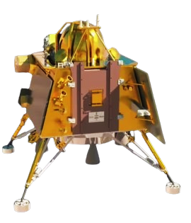
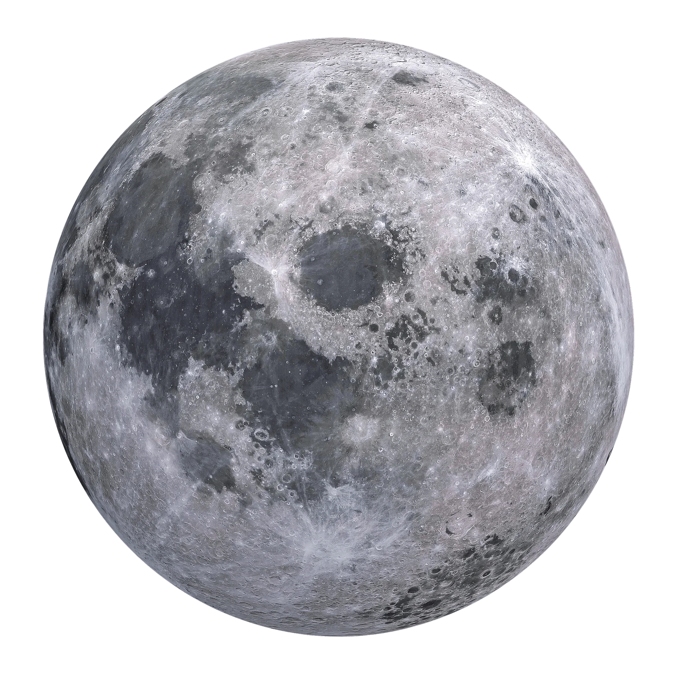

Chandrayaan 3


Chandrayaan-1 (pronunciation: chuhn-drah-yahn) was the first Indian lunar probe launched under the Chandrayaan program. Operated by the Indian Space Research Organisation (ISRO), it embarked on its mission in October 2008 and continued until August 2009.
On October 22, 2008, at 00:52 UTC, Chandrayaan-1 was launched using a PSLV-XL rocket from the Satish Dhawan Space Centre in Sriharikota, Andhra Pradesh.
Water Discovery: One of its significant achievements was the discovery of widespread water molecules in lunar soil.
Mapping and Composition: Chandrayaan-1 mapped the Moon’s surface in infrared, visible, and X-ray light, providing valuable data on its chemical composition and mineralogy.
On August 28, 2009, at approximately 20:00 UTC, communication with Chandrayaan-1 ceased, officially marking the end of the mission.
Chandrayaan-2 is the second lunar exploration mission developed by the Indian Space Research Organisation (ISRO) after Chandrayaan-1. It consists of a lunar orbiter, the Vikram lunar lander, and the Pragyan rover, all of which were developed in India. The main scientific objective is to map and study the variations in lunar surface composition, as well as the location and abundance of lunar water.
The spacecraft was launched from the second launch pad at the Satish Dhawan Space Centre in Andhra Pradesh on 22 July 2019 at 09:13:12 UTC by a LVM3-M1 rocket. The craft reached lunar orbit on 20 August 2019. The Vikram lander attempted a lunar landing on 6 September 2019; the lander crashed due to a software error.
The lunar orbiter continues to operate in orbit around the Moon. A follow-up landing mission, Chandrayaan-3, was launched in 2023 and successfully performed a lunar landing.
Launch date 22 July 2019, 09:13:12 UTC, Chandrayaan-2 was launched using a LVM3 M1 rocket from the Satish Dhawan Space Centre in Sriharikota, Andhra Pradesh.
Distinguishing between hydroxyl and water molecules and finding unique signatures of both using the Imaging Infra-Red Spectrometer (IIRS) onboard Chandrayaan-2.
Successfully inserting the spacecraft into lunar orbit, demonstrating India's capability to reach the Moon and perform complex manoeuvres.
The second de-orbiting manoeuvre for Chandrayaan-2 spacecraft was performed successfully today on September 04, 2019, beginning at 0342 hrs IST as planned, using the onboard propulsion system. The duration of the manoeuvre was 9 seconds.
On October 14, 2019, Chandrayaan-2 detected the presence of Argon-40 in the lunar exosphere.
On July 30th, 2020 Chandrayaan-2 imaged the Sarabhai Crater located on the north-east quadrant of the moon
Chandrayaan-3 is the third mission in the Chandrayaan programme, a series of lunar-exploration missions developed by the Indian Space Research Organisation (ISRO). The mission consists of a lunar lander named Vikram and a lunar rover named Pragyan, similar to those launched aboard Chandrayaan-2 in 2019.
Chandrayaan-3 was launched from Satish Dhawan Space Centre on 14 July 2023. The spacecraft entered lunar orbit on 5 August, and the lander touched down near the Lunar south pole on 23 August at 18:03 IST (12:33 UTC), making India the fourth country to successfully land on the Moon, and the first to do so near the lunar south pole. On 3 September the lander hopped and repositioned itself 30–40 cm (12–16 in) from its landing site making the second hop on lunar surface after Surveyor 6. After the completion of its mission objectives, it was hoped that the lander and rover would revive for extra tasks, on 22 September 2023, but missed the wake-up call. On September 30, the second lunar night began, eliminating hopes of revival. On the other hand, Propulsion module returned to Earth's orbit on 22 November 2023 after exiting lunar orbit via a series of maneuvers starting from 9 October 2023.
The propulsion module carries both the lander and the rover. The mission duration is approximately one lunar day, which is equivalent to about 14 Earth days.
The designated landing site measures 4 km x 2.4 km and is located at approximately 69.37°S latitude and 32.35°E longitude on the lunar surface.
Uses MMH (Monomethylhydrazine) + MON3 (Mixed Oxides of Nitrogen) propellants. It has 4 engines with 800 N thrust (throttleable) and 8 engines with 58 N thrust (throttleable). The system also includes engine control electronics.
Chandrayaan-3 was launched aboard an LVM3-M4 rocket on 14 July 2023, at 09:05 UTC from Satish Dhawan Space Centre Second Launch Pad in Sriharikota, Andhra Pradesh, India, entering an Earth parking orbit with a perigee of 170 km (106 mi) and an apogee of 36,500 km (22,680 mi).
After a series of Earth bound manoeuvres that placed Chandrayaan-3 in a trans-lunar injection orbit, ISRO performed a lunar-orbit insertion (LOI) on 5 August, successfully placing the Chandrayaan-3 spacecraft into an orbit around the Moon. On 17 August, the Vikram lander separated from the propulsion module to begin the landing operations .